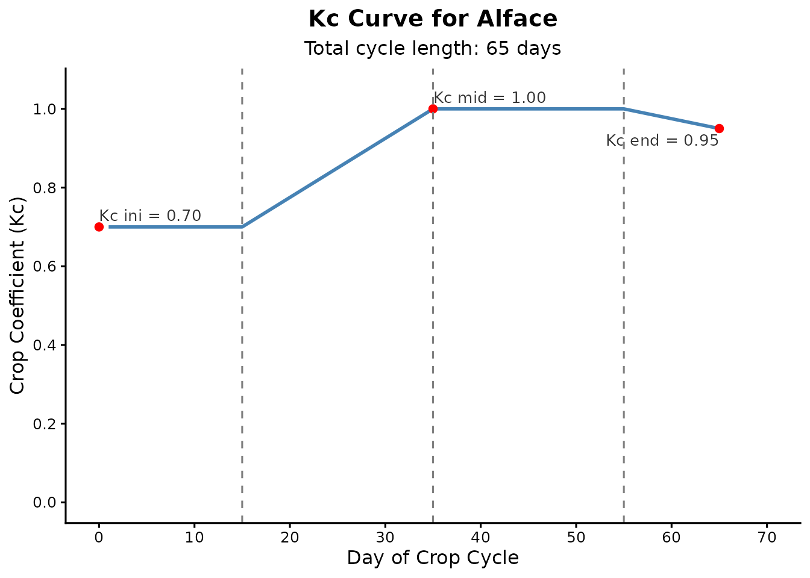

O pacote irritool está em contínuo desenvolvimento e oferece um conjunto crescente de ferramentas em R para a modelagem do sistema solo-água-planta-atmosfera. Embora o pacote inclua recursos para a extração de dados climáticos em grade e outras análises agronômicas, este tutorial foca especificamente no fluxo de trabalho central do manejo de irrigação.
Abaixo, demonstramos os passos fundamentais para estimar as necessidades hídricas de uma cultura e simular o balanço hídrico diário do solo, o que é muito útil para o planejamento de safras e análises de déficit hídrico.
1. Preparando os Dados Climáticos
Para calcular o balanço de água no solo, o primeiro passo é obter dados meteorológicos diários. Para este exemplo didático, vamos simular 65 dias de dados de evapotranspiração de referência (ET0) e precipitação diretamente no R.
library(irritool)
# Simulando 65 dias de dados climáticos para o ciclo da cultura
dias_ciclo <- 65
set.seed(42)
# ET0 em mm/dia
eto_sim <- round(runif(dias_ciclo, 3, 6), 1)
# Chuva em mm/dia (maior parte dos dias secos com alguns eventos isolados de chuva)
chuva_sim <- round(sample(c(rep(0, 55), runif(10, 5, 30))), 0)2. Construindo a Curva do Coeficiente de Cultura (Kc)
As culturas consomem água em taxas diferentes dependendo da sua fase
fenológica. A função calc_kc_curve() utiliza a metodologia
da FAO-56 para construir a série diária de Kc.
Vamos simular um ciclo de 65 dias para uma hortaliça (ex: Alface), dividida em quatro fases: Inicial, Desenvolvimento da Cultura, Fase Intermediária e Fase Final.
# Definindo os parâmetros de Kc e a duração das fases (em dias)
parametros_kc <- c(0.7, 1.0, 0.95)
fases <- c(15, 20, 20, 10)
curva_alface <- calc_kc_curve(
kc_points = parametros_kc,
stage_lengths = fases,
crop = "Alface"
)
# Visualizando o gráfico gerado automaticamente
curva_alface$kc_plot
3. Simulando o Balanço Hídrico no Solo
Com os dados climáticos e os valores diários de Kc estabelecidos,
podemos rodar a simulação da umidade do solo. A função
calc_water_balance() monitora a Capacidade Total de Água
Disponível (TAW), a Água Facilmente Disponível (RAW) e a depleção atual
(déficit).
Utilizaremos a regra de irrigação por limite
("threshold"), que aplica água automaticamente sempre que a
depleção do solo ultrapassar a RAW, garantindo que a planta não sofra
estresse hídrico.
# Parâmetros do solo e sistema radicular
profundidade_raiz <- 300 # mm
umidade_cc <- 0.30 # Capacidade de campo (m3/m3)
umidade_pmp <- 0.15 # Ponto de murcha permanente (m3/m3)
fator_p <- 0.55 # Fator de depleção (p)
resultado_balanco <- calc_water_balance(
et0 = eto_sim,
rainfall = chuva_sim,
daily_kc_values = curva_alface$kc_serie,
root_depth = profundidade_raiz,
theta_fc = umidade_cc,
theta_wp = umidade_pmp,
depletion_factor = fator_p,
initial_depletion = 0, # Iniciando na capacidade de campo
irrigation_rule = "threshold"
)Analisando os Resultados
A função retorna tanto os dados diários detalhados quanto um resumo dos totais acumulados ao longo do ciclo.
# Verificando as lâminas totais para o ciclo completo
resultado_balanco$summary_depths
#> $total_rainfall
#> [1] 133
#>
#> $total_water_surplus
#> [1] 17.755
#>
#> $net_rainfall
#> [1] 115.245
#>
#> $total_etc
#> [1] 271.7475
#>
#> $total_irrigation_applied
#> [1] 156.5025
#>
#> $irrigation_events_count
#> [1] 6O sumário mostra exatamente qual foi a lâmina total de irrigação aplicada e quantos eventos de irrigação foram acionados para manter a cultura fora da zona de estresse.
Também podemos inspecionar o registro diário detalhado para analisar a dinâmica da água dia a dia:
# Visualizando os primeiros 10 dias do balanço
head(resultado_balanco$water_balance_data, 10)
#> day rainfall et0 root_depth taw raw depletion_start kc ks etc
#> 1 1 0 5.7 300 45 24.75 0.00 0.7 1 3.99
#> 2 2 0 5.8 300 45 24.75 3.99 0.7 1 4.06
#> 3 3 0 3.9 300 45 24.75 8.05 0.7 1 2.73
#> 4 4 0 5.5 300 45 24.75 10.78 0.7 1 3.85
#> 5 5 0 4.9 300 45 24.75 14.63 0.7 1 3.43
#> 6 6 0 4.6 300 45 24.75 18.06 0.7 1 3.22
#> 7 7 0 5.2 300 45 24.75 21.28 0.7 1 3.64
#> 8 8 0 3.4 300 45 24.75 0.00 0.7 1 2.38
#> 9 9 0 5.0 300 45 24.75 2.38 0.7 1 3.50
#> 10 10 0 5.1 300 45 24.75 5.88 0.7 1 3.57
#> depletion_end irrigation_applied water_surplus
#> 1 3.99 0.00 0
#> 2 8.05 0.00 0
#> 3 10.78 0.00 0
#> 4 14.63 0.00 0
#> 5 18.06 0.00 0
#> 6 21.28 0.00 0
#> 7 24.92 24.92 0
#> 8 2.38 0.00 0
#> 9 5.88 0.00 0
#> 10 9.45 0.00 0